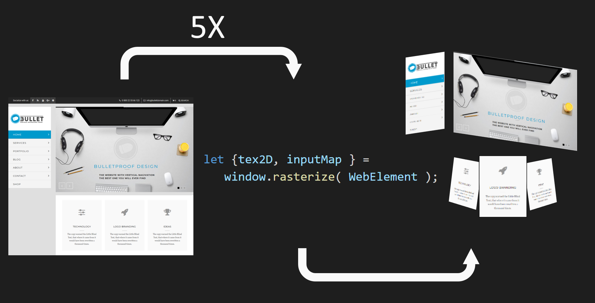
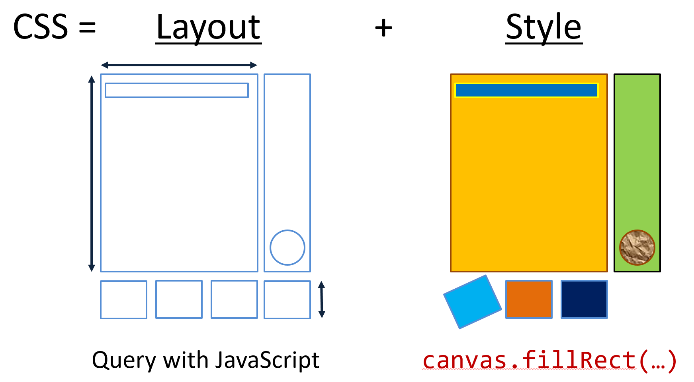
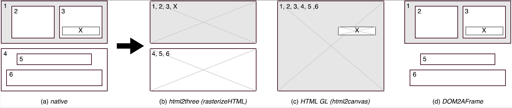

This post is about the DOM2AFrame proof-of-concept (and extremely non-production-ready) library, which transcodes typical HTML/CSS webpages to WebVR compatible UIs on-the-fly, while maintaining support for full interaction and animation at good enough™ framerates. This fun project has helped us get deeper insights in CSS handling, the browser's rendering pipeline, supported and missing JavaScript APIs and the performance of WebGL.
Some of the key takeaways:
- Creating and rendering to 2D textures can be slow, but WebGL is amazingly fast and even relatively unoptimized JS code can get you good results.
- JavaScript cannot (easily) capture all state changes on a webpage and not all CSS/JS interactions are well-defined, which sometimes leads to less performant implementations and missing features.
- People working on CSS/browser engines are wizards.
And one of the main results:
1. Browsing the Web in VR
For my PhD in web performance, I had primarily been looking into network performance, with HTTP/2 and QUIC. To learn more about browser-side performance together with bachelor student Sander Vanhove, we wanted to do something with the hot new kid on the block: WebVR! The topic quickly turned into the question (How) can we render webpages in 3D/VR? And related: can we create UIs for games/3D experiences in plain HTML/CSS/JS?
It quickly became apparent that while some modern browsers do offer a browse in VR option, this is often limited. As can be seen in the video below, they usually just map the page onto a very narrow ~2D plane, acting like a floating screen/window in the 3D space. There is no immersion or depth, and worst of all: content specifically made for VR (like 360° videos) isn't automatically integrated.
Additionally, here is also nothing developers can do about this (yet): while CSS supports various 3D-related properties, there is nothing like a CSS media-query for VR that would allow us to make a vr-version of a site (though support for this type of thing is being worked on). Even then, browsers would need additional directives to allow a full integration.
WebVR itself also can't help us here directly: it primarily acts as a layer between the various Virtual Reality hardware setups and the 3D/WebGL capabilities of the HTML <canvas> element. This means we can build fully immersive, VR-ready 3D experiences, but that we have to use lower-level tech like shaders, 3D objects and raycasting, instead of our beloved HTML/CSS/.onclick. We also lose many of the extremely powerful CSS features like grids or flexbox, that are typically a pain to re-create from scratch. For many, this would mean investing in a new skillset or even hiring new engineers to create a VR webpage and then they would still be stuck having to maintain two very different codebases.
So we set out to find a way to render standard HTML/CSS webpages into a 3D/VR context.
2. Render HTML to a Texture
A basic approach to our problem would be to render individual elements/containers (the menu, hero image, contact form, ...) to a 2D texture and then map those onto separate 3D elements/quads. A pseudocode API for this could look something like in Figure 1.

Sadly, as it turns out, this type of rasterization API is not available in JavaScript. The reasons for this are not fully clear to me (as this should be quite do-able, if non-trivial, to provide for browsers), but the best reference I have found cites mainly security concerns. For example, Firefox does have something similar, but you can only use it in privileged Firefox contexts (what MDN refers to as chrome :)).
Luckily, as usual, we were not the only ones thinking of this type of functionality. It turned out other people had already cracked this problem, using two very different workarounds!
Workaround 1: The <foreignObject> tag
The first method uses the obscure <foreignObject> tag of the Scalable Vector Graphis (SVG) format. Any HTML content placed within this tag will be rendered as if it was a normal page and then the result is injected back into the SVG. If we subsequently render the SVG to a texture with the existing <canvas> APIs, we can use it in 3D as well!
However, again due to security considerations, links to external resources (e.g., CSS, JS) are not supported so these need to be inlined/copied and images need to be base64 encoded. Das Surma has a good write-up on this method and the most mature library we have found that does this is rasterizeHTML.
Getting these textures into 3D is then relatively straightforward, but adding interaction with the 3D result is a bit more involved. A good approach is to just let the underlying DOM version of the page handle the intricacies and "simply" re-render the updated elements when needed. To alert the DOM that something happened, we can for example map mouse coordinates to texture UV coordinates and then use those through document.elementFromPoint to find the associated DOM element. Using MutationObservers we can then trigger an appropriate re-render. HTML2Three is a nice POC implementation of these concepts that uses rasterizeHTML interally.
You can see the results of this method using the rasterizeHTML and HTML2Three libraries on our testsite in Figure 3. Note that it is possible to get better results, but this requires substantially more setup and overhead.
Workaround 2: Re-invent the browser's rendering implementation
This method sounds a bit crazy: instead of letting the browser render the HTML/CSS, let's write a custom renderer and draw the elements to a texture ourselves! This is possible because the <canvas> element also provides a mature and extensive 2D drawing API. It is also possible because we can use JavaScript to obtain the results of the browser's "layouting" calculations and "only" need to re-implement the actual "styling/painting" logic, see Figure 2. For example, the results of complex positioning setups, such as with flexbox, can be queried using getBoundingClientRect. Other results of CSS parsing are available using getComputedStyle.

Still, even "only" implementing this part is quite daunting, though it can make for an interesting learning experience. We decided to use the excellent HTML2Canvas library, which is able to get extremely impressive visual results (almost picture perfect) in our tests, see Figure 3.
Since the end-result/output of this method (2D textures) is very similar to Workaround 1, the way we deal with user input and updates is the same. The HTML-GL library wraps HTML2Canvas (and is in the progress of supporting other "backends") to support 3D.

Performance problems
So, great! In HTML2Canvas we have found an excellent renderer! Now we just need to use it on our individual elements and done! Sadly, this is a post (at least partly) about performance and we haven't talked about performance yet...
As it turns out, neither of the two workarounds offer satisfactory performance. While Das Surma quoted per-frame times of 10ms for Workaround 1 on a 2017 macbook pro, in our tests it was closer to 275ms per-frame on a good gaming PC (i7, 16GB RAM, NVidia GTX 1070). Workaround 2 was even worse, with average times of 380ms. This was tested on our test page (see Figure 3) that triggers various animations and DOM changes over about 30s. This translates to 2.5 - 3.5 FPS, a long stretch from the 60 FPS target.
Further testing revealed that this is mainly due to the overhead of creating new 2D texture contexts, not how much you actually end up drawing to them. This is probably why we observed that the two libraries that add VR/3D options, HTML2Three and HTML-GL, both take a different approach to limit the amount of generated textures: HTML2Three prefers a texture per high-level <div> container, while HTML-GL tries to optimize by putting elements that have 3D CSS transform properties on separate "layers", see Figure 4 (Note that the browser does something similar internally to optimize for animations etc.). Most examples that we've seen stay at about 5 separate textures. This means performance can be kept usable in some cases, but severely limits our options for animating and interacting with individual elements. To be fair, this is not "the fault" of rasterizeHTML or HTML2Canvas as they were probably never made with high performance in mind, but that doesn't change our problem.

3. Transcode HTML to 3D objects and shaders
In order to get better performance and thus support large amounts of animated objects, we decided to create our own solution. Seeing as the creation and maintenance of 2D textures was deemed the biggest bottleneck, we decided to try to go directly from DOM to 3D, without the intermediate step. For this, our high-level approach is very similar to that of HTML2Canvas in Figure 2: we re-purpose the browser's layouting calculations but instead of using the 2D drawing APIs, we directly create 3D equivalents for our 2D DOM elements for use in WebGL.
We quickly deemed working directly with WebGL too daunting though. The excellent Three.js library is a better option, but at that time it didn't offer good WebVR support out-of-the-box. Then we came accross A-Frame, a project made specifically for WebVR by Mozilla. A-Frame uses Three.js internally but adds a lot of goodies on top, both for interacting with WebVR and easily creating 3D scenes. For example, A-Frame sports its own HTML-alike syntax, see Figure 5. However, even though it looks and feels like HTML, this syntax doesn't take CSS into account and you cannot use typical HTML tags like <div> or <img>.

Thus, DOM2AFrame was born! We simply loop over all DOM elements in a target <div> and create equivalent A-Frame elements for each. In most cases, this is a simple Quad/<a-plane> (3D object constrained by 4 points) to represent the item's bounding rectangle. Items containing text are a combination of a background Quad (A-Frame text objects don't allow background colors) and a text mesh on top. Only more complex elements like <select> require a more intricate approach. Figure 5 shows a simple example of how we transcode HTML/CSS to equivalent A-Frame syntax.
Using this setup, we can maintain a direct mapping between DOM elements and their A-Frame 3D equivalents, since both simply exist in JS. This leads to much less overhead when propagating input events and makes it easier to figure out which 3D objects should be updated when something changes in the DOM, when compared to the render-to-texture-first approach.
We hit a snag when trying to position/transform our 3D elements directly via CSS however. We tried using the existing CSS 3D transform options, but these of course also take effect when watching the webpage outside of DOM2AFrame... and as we've said in the introduction, there is nothing like a media query to indicate to CSS to only apply these transforms in a VR setting. After discussing various options, we finally settled on using custom CSS properties, see Figure 6, which can be read and manipulated from JS. We feel these are similar enough to normal CSS to be clear for developers and they can be replaced by the existing properties when custom media queries become available.
Performance aspects
While our setup has good performance in theory, in practice there were several issues:
1. Mutation observer
Firstly, we rely on MutationObserver to listen for changes in the DOM (e.g., as a result of user interaction) and thus figure out which 3D elements need to change. However, MutationObserver isn't as finegrained or omniscient as we would have hoped:
When a CSS property has changed, it doesn't tell you which property, just that something in the style has changed. It also won't give you the old value of the property (the attributeOldValue was empty or unhelpful when we tried to use it).
We solved this by keeping our own cache of useful CSS properties. For every Mutation event, we then check our cache vs the getComputedStyle/getBoundingClientRect data to determine which properties have actually changed. This way, we can only trigger a change in A-Frame when really needed.
To adhere to known best practices, we group our calls to getComputedStyle/getBoundingClientRect before actually updating anything. In hindsight, this might have been a premature optimization though, since our code never directly updates the DOM but only the
<canvas>contents, and so there should be no recalculations (at least if the Mutation event isn't triggered during DOM updates). We did not notice major performance benefits from this but still... better to be safe than sorry?
If one element's position/width/etc. has changed, this will only trigger a Mutation event on that element, not on any other (child) elements that might have shifted left/right/up/down as a result of this change.
We solved this by looping over all observed elements (not just the children of the changed element!) and checking with their custom caches if their positions had changed. By using a cache, this is fast-enough™ but it would be better to add some additional logic to actually figure out what could have changed and pre-filter elements based on that.
Applying more general CSS rules like
* { margin: 15px; }doesn't seem to trigger any Mutation events at all... and as far as we know, there are no other ways to (easily) catch these changes in JS.For this, we provide two options to the developer: either they themselves call the
Update()function if they think this type of rule might have been applied, or they just leave the Update loop on constantly, usingrequestAnimationFrame. Which brings us to the last point:CSS Animations or transitions don't trigger Mutation events.
For this, we use the separate "animationstart/animationend" and "transitionstart/transitionend" events. Once inside an animation or transition, we keep triggering requestAnimationFrame until all animations are done. A bit problematic is that the transitionstart event isn't supported across browsers yet (shame on you, Chrome!), but luckily we are (a) a fun/research project and (b) thus can require developers to call a method when they know they will start a transition.
All of this results in a (relatively) complex update loop that, in hindsight, isn't as optimized as we would have liked or envisioned with our approach. However, we do get good results for our testcases on a good PC (58 FPS on the same testcase as discussed before), though simply leaving the Update() loop running in requestAnimationFrame tends to also slow down after a while on this configuration.
2. Optimizing input handlers
Handling input in 3D typically uses the raycasting/picking method, where we check if a line from the camera through the mouse/pointer position intersects with any 3D elements. Since this can be a slow operation, we do not want to have to check each individual element but only the elements that actually have event handlers attached to them. This is not absolutely necessary for discrete click-events, but more continuous events like mousemove need this optimization.
Sadly, there is no way in JS to get a list of registered event listeners for a given event type (i.e., no el.getEventListeners('mousemove')). Luckily, JS does allow us to override the .add/.removeEventListener methods on the Element prototype! We adapted this code to keep track of all registered event handlers and also properties like .onclick and decide our raycasting based on that information.
Caveat: just messing around with the prototypes of built-in JS objects can have bad results overall because of how JIT compilers like V8 work (they make certain assumptions that might no longer hold true if you've changed prototypes). I don't understand all of this 100% yet, but can certainly recommend @bmeurer's tweets and blogposts! In our implementation, we didn't notice slowdowns due to this method.
Amusing anecdote: rendering borders in A-Frame was quite the ordeal because it has no default way of doing this. We tried out many methods before settling on one that seemed to do everything right... until our mouse hover events really started acting up. I spent roughly 8 hours debugging before I found that the borders (even those of 1px wide!) were seen as valid raycasting targets. This led to very inconsistent firing of extra hover events, often with the wrong target element set... fun times!
3. Other
There were some other aspects we encountered/implemented:
Many pages use wrapper elements that don't really get rendered themselves but mainly help to position their children correctly (e.g., container
<div>s). If these elements have no direct visual contribution, we can just skip them in A-Frame, see element 4 in Figure 4(d). This small change led to significant speedups in our testcases, which we found a bit counter-intuitive (since the A-Frame elements shouldn't execute their (fragment) shaders if they're invisible).CSS overflow handling (e.g.,
overflow: hidden;) was quite complex to do in 3D. While the 2D API provides this out-of-the-box, getting this to work in 3D was considerably more involved. Three.js has the concept of clipping planes in their standard shaders, but while these work, they are badly documented. The problems came when trying to clip Text in A-Frame, which uses a custom library and, consequently, also uses custom shaders... so no Three.js clippingPlanes support. The solution was to manually adjust these shaders to include the Three.js code. You can see the (yellow debug) clipping planes in action in the video below.This method of hiding content overflow works, but is also sub-optimal: the clipping planes are defined per-element (not only on the parent container) and are checked for every pixel/fragment in the fragment shader separately. This can be further optimized by doing more complex subdivisions or probably by masking, but again works well enough in our POC.
Finally, to the best of our knowledge, it is often difficult or impossible to access, handle or trigger CSS pseudo-classes/elements (e.g.,
:hover, :visited, ::before, ::afteretc.) from JavaScript. Especially in the cases where::beforeand::afterinject new elements into the page, these are not query-able in JS because they don't seem to be part of the DOM. Another problem is that we cannot trigger the:hoverpseudo-class from JS (e.g., when we hover over the link in 3D, we want to apply :hover on the DOM side so we get the appropriate visual state change).We were only able to solve these issues by for example introducing an extra
hoverclass and toggle that as a normal CSS class to simulate this behaviour. We have yet to find a satisfactory solution for handling::beforeand::afterand are open to suggestions :)
4. Conclusion and Future Work
With DOM2AFrame we have largely achieved our goal of creating (proof-of-concept) VR-ready webpages/UIs in simple HTML/CSS. However, the project is decidedly not production ready: it is currently split across two separate repositories, it only really works well in Chrome and is missing plenty of features that would make it usable for "modern" webpages. The code is far from production-level quality and could benefit from some heavy refactoring. It is also distinctly possible that some of the problems mentioned above could have been solved differently and more easily. Finally, we have also encountered hardware setups that struggle to maintain even 10 FPS using our approach (especially those lacking a good GPU)...
Still, we have approached this mostly as a cool learning project and on that front it has certainly delivered: we have a much deeper insight into the inner workings of CSS, JS and partly WebGL. The sheer complexity of these underlying systems is staggering, making re-writes like Firefox Quantum even more impressive.
Many of the performance improvements we made are things you typically see in game engines. The addition of certain JS/CSS APIs in the future could help to make these manual optimizations unnecessary. I am for one looking forward to what comes out of Houdini!
However, I sincerely hope that our work becomes obsolete in the coming months/years, as browser vendors introduce APIs that make it possible to create interesting VR versions of websites, much like we now create mobile versions. A little birdy told me this is already being worked on....
In the mean time, we will keep working on "websites in VR" by polishing DOM2AFrame and experimenting which User Experience concepts are best fit for this type of content in the new medium, as our demo sites are quite nice but not exactly what you'd want to show your visitors :)
Thanks to Sander Vanhove and Wouter Vanmontfort for working with me on this topic.
Custom figures were made with https://draw.io, Visual Studio Code and PowerPoint
This work has been presented at the Stereopsia/IC3D conference in Brussels, 11 December 2017. More information can be found at: https://webvr.edm.uhasselt.be
Last update: 07/12/2017
Live version: https://github.com/rmarx/DOM2AFrame-perfcal17